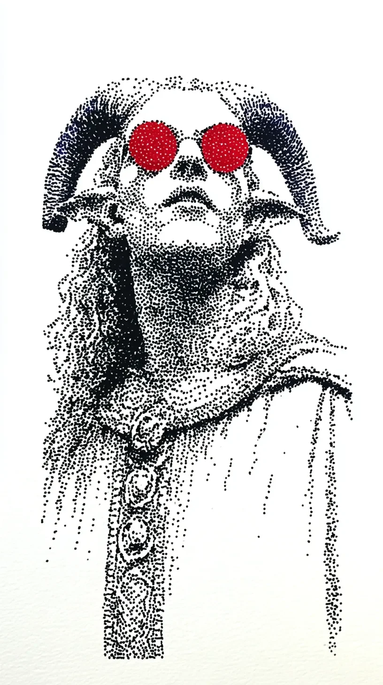

숲의 가장 깊은 곳에서, 그 고대의 존재는 인간의 물건을 쓰고 있었다. \
In the deepest part of the forest, the ancient being was wearing a human artifact.
그것은 새빨간 플라스틱으로 만들어진 조잡한 선글라스였다. \
It was a pair of cheap sunglasses made of bright red plastic.
수천 년은 됨직한 이끼 낀 떡갈나무에 등을 기댄 채, 그 존재는 가만히 앉아 있었는데, 그 모습은 마치 시간이 조각해낸 바위와 같았지만 두 개의 붉은 원은 숲의 녹색과 부조화를 이루며 생생하게 빛났다. \
Leaning its back against a mossy oak tree that seemed thousands of years old, the being sat motionless, like a rock carved by time itself, yet the two red circles shone vividly, clashing with the forest's green.
녀석이 고개를 살짝 기울이자, 나뭇잎 사이로 스며든 햇빛이 렌즈에 반사되어 춤추는 핏빛 점들을 숲 바닥에 흩뿌렸다. \
As it tilted its head slightly, sunlight filtering through the leaves reflected off the lenses, scattering dancing points of blood-red light across the forest floor.
숲의 모든 소리, 즉 바스락거리는 나뭇잎 소리와 멀리서 우는 새소리가 마치 그 붉은 유리를 통과하며 걸러지는 듯했다. \
Every sound of the woods, the rustle of leaves and the call of a distant bird, seemed to filter through that red glass.
그것은 손을 들어 안경테를 조심스럽게 만졌고, 거친 나무껍질 같은 피부가 매끄러운 인공물을 어루만졌다. \
It raised a hand to touch the frame, its rough, bark-like skin stroking the smooth, artificial object.